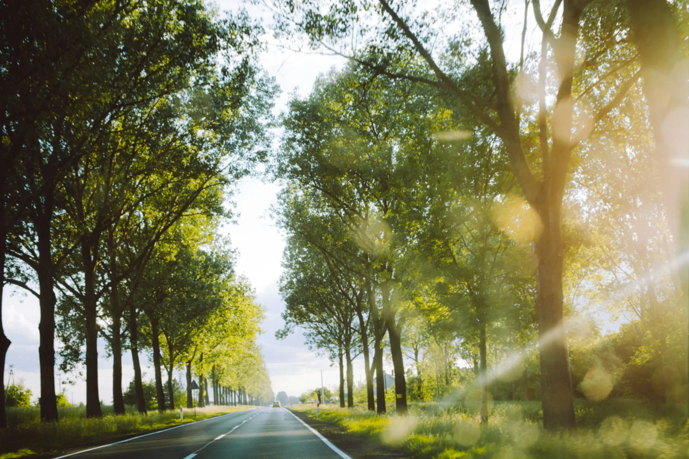
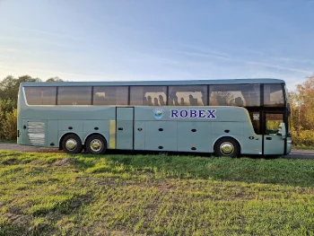
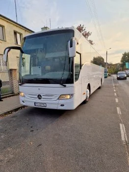
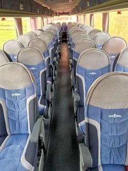
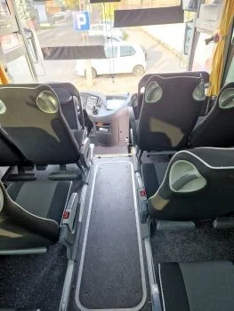

Linia przez Parczew
Lublin - Parczew - Biała Podlaska
- Lublin
- Parczew
- Biała Podlaska

Linie regularne do Lublina, Parczewa, Radzynia, Międzyrzeca i Łomaz, kursy do Brześcia oraz wynajem autokarów z kierowcą na wycieczki w kraju i za granicą.
Codzienne dojazdy do pracy, szkoły i urzędów. Wszystkie nasze linie zbiegają się w Białej Podlaskiej. Aktualny rozkład jazdy każdej linii będzie tu do pobrania w PDF.
Pełna lista przystanków i godziny odjazdów w rozkładzie jazdy.
Wozimy grupy szkolne na wycieczki i grupy turystyczne na wyjazdy w kraju i za granicą. Chętnie podejmujemy stałą współpracę ze szkołami i biurami turystycznymi. Zapraszamy do rezerwacji terminów.
Busy na mniejsze grupy i duże autokary turystyczne na dalekie trasy.
Bezpłatne Wi-Fi na pokładzie




Z ROBEX to możliwe. Szukamy kierowców na linie regularne i wyjazdy turystyczne. Zadzwoń albo napisz, a my zajmiemy się resztą.
Firma ROBEX powstała w 2020 roku, na wieloletnim doświadczeniu założyciela. Zajmujemy się przewozem osób w kraju i za granicą.
Obsługujemy linie regularne z Białej Podlaskiej, kursy do Brześcia oraz wyjazdy grupowe. Współpracujemy ze szkołami i biurami turystycznymi. Za kierownicą siedzą doświadczeni, wykwalifikowani kierowcy, dla których bezpieczeństwo pasażerów jest na pierwszym miejscu.
Pytania o rozkład, rezerwacje wyjazdów i wynajem autokaru najszybciej załatwimy telefonicznie.